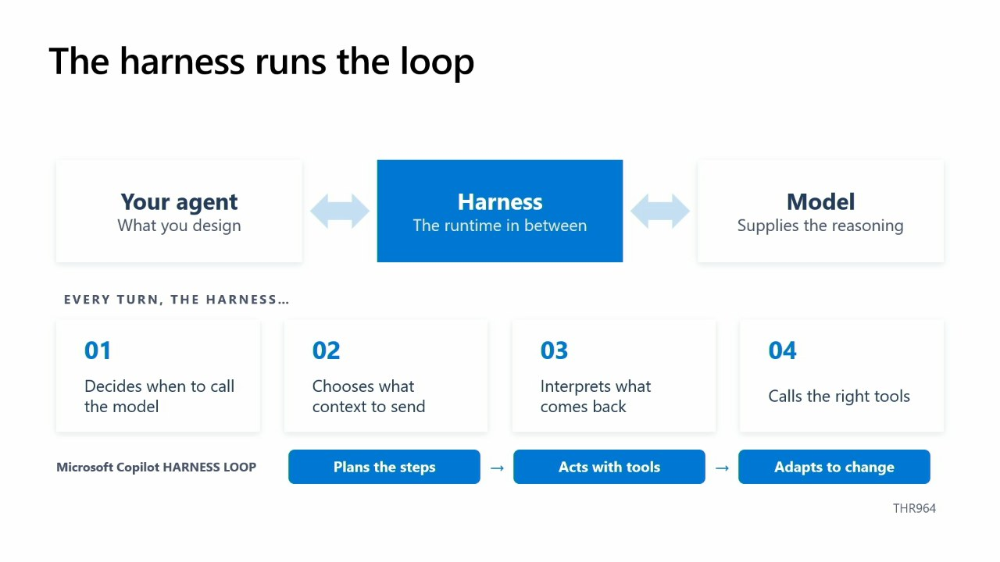
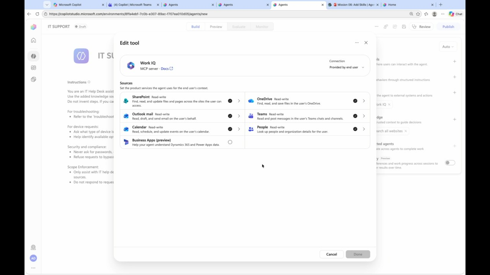
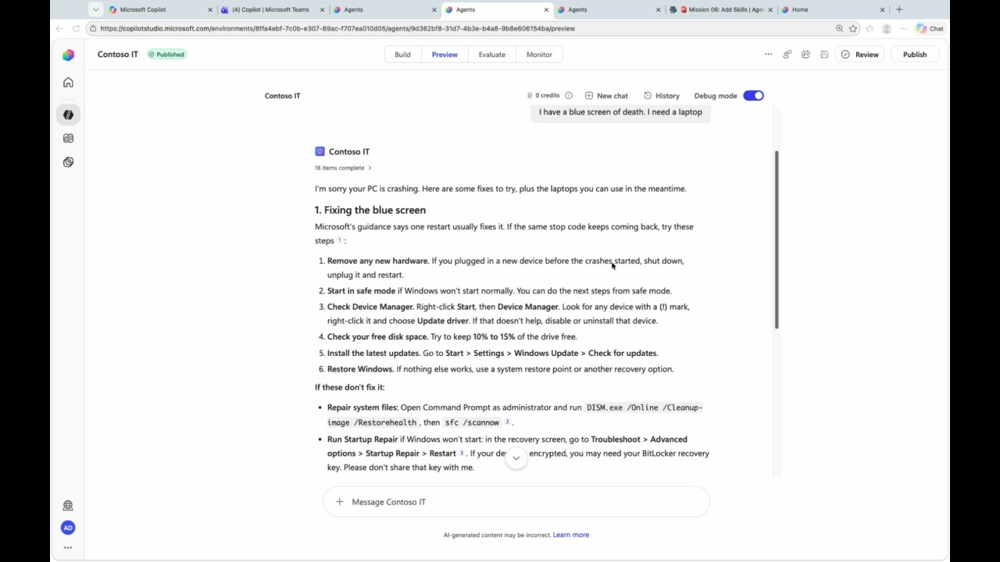
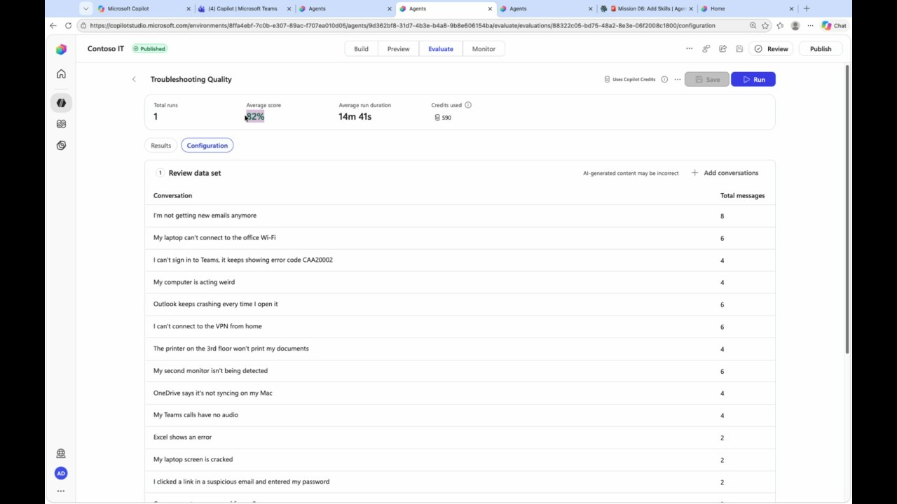

THR964 官方课件实拍 · 01:55
The Harness Runs the Loop：每轮四步调度与自愈闭环
连接制作者设计与底层推理模型，按序执行调用裁决、上下文装配、结果解析与精准工具触发，驱动规划—行动—自适应循环 [1][2]。
传统对话机器人要求制作者预先猜透每一种用户提问并手工编排话题分支，一旦遭遇工具报错或复合诉求便容易断链 [1]。在 Ignite 2026 剧场专场 THR964 中，微软首席云技术布道师 April Dunnam 拆解了处于智能体设计层与多模型大脑之间的全新运行时——Microsoft Copilot Harness [1][2]。借助“规划—行动—评估重规划”闭环、最多按需加载 50 项的 Markdown 技能、默认集成的组织上下文以及内置安全代码沙盒，制作者可在 10 至 15 分钟内从零交付高可靠的企业级智能体，并通过自动化单元评测闭环验证 [1][2]。
---
title: Microsoft Ignite 2026 [THR964]：解锁 Copilot Studio——面向制作者的全新 Microsoft Copilot 执行内核 || Microsoft Ignite 2026 [THR964]: Copilot Studio Unlocked—The New Microsoft Copilot Harness for Makers
eyebrow: Microsoft Ignite 2026 · THR964 Official Breakdown || Microsoft Ignite 2026 · THR964 Official Breakdown
brand: Study Room Copilot Studio || Study Room Copilot Studio
date: 2026-11-25
strict_i18n: true
strict_density: true
lead: 传统对话机器人要求制作者预先猜透每一种用户提问并手工编排话题分支，一旦遭遇工具报错或复合诉求便容易断链 [1]。在 Ignite 2026 剧场专场 THR964 中，微软首席云技术布道师 April Dunnam 拆解了处于智能体设计层与多模型大脑之间的全新运行时——Microsoft Copilot Harness [1][2]。借助“规划—行动—评估重规划”闭环、最多按需加载 50 项的 Markdown 技能、默认集成的组织上下文以及内置安全代码沙盒，制作者可在 10 至 15 分钟内从零交付高可靠的企业级智能体，并通过自动化单元评测闭环验证 [1][2]。 || Traditional chatbots forced makers to anticipate every user phrasing and script rigid topic branches up front, leaving flows brittle whenever tools failed or compound requests arrived [1]. In Ignite 2026 theater session THR964, Microsoft Principal Cloud Advocate April Dunnam unpacked the **Microsoft Copilot harness**—the new runtime sitting between maker design and multi-model reasoning [1][2]. Combining a Plan-Act-Evaluate-Replan loop, up to 50 on-demand Markdown skills, default Work IQ grounding, and a built-in Python sandbox, makers build and unit-test complex enterprise agents from scratch in 10 to 15 minutes [1][2].
panel_label: THR964 核心工程摘要 || THR964 Executive Brief
panel_title: 描述终局目标，由运行时接管规划、自愈与按需装载 || Describe the Goal; Let the Harness Plan, Adapt, and Load on Cue
panel_desc: April Dunnam 现场构建企业技术支持智能体，并与旧版标准话题内核展开同题正面对决 [1][2]。 || April Dunnam builds a live IT Support agent on stage and runs a head-to-head compound-prompt test against the legacy Standard harness [1][2].
panel:
- 四步自愈运行时 — 在每轮对话裁决模型调用时机、筛选最小上下文，并在结果偏离或工具报错时自动重规划 [1][2] || Self-Healing Loop — Decides when to invoke GPT or Anthropic models, trims context, and re-plans automatically when tools fail [1][2]
- 按需挂载省词元 — 单智能体支持多达 50 项动态技能，免除冗长规程常驻上下文，显著压降净词元消耗 [1][3] || On-Demand Skills — Supports up to 50 Markdown skills loaded strictly when needed, keeping prompts short and cutting net token use [1][3]
- 量化单测与沙盒 — 内置安全环境运行 Python 产出图表文件，上线前通过自动化评测跑出 82% 基准分 [1][2] || Sandbox & Unit Evals — Runs Python inline for charts and files while grading multi-turn test sets (82% live demo score) pre-publish [1][2]
metrics:
- 单智能体技能容量 || Max Skills per Agent | 50 | 将排障与换机等专业规程拆分为独立文本包按需拉取，告别全量指令硬塞 [1][3] || Repeatable Markdown procedures with optional templates and Python scripts loaded dynamically on cue [1][3]
- 复合提问推理步数 || Live Debug Reasoning Steps | 18 | 面对“蓝屏死机+申请新电脑”双诉求，自动串联排障技能与白名单检索后兜底给出机型 [1][2] || Executed live in Debug mode to sequence 6 BSOD recovery steps before surfacing replacement laptops [1][2]
- 排障测试集评测分 || Automated Eval Benchmark | 82% | 在评测面板自动跑完多轮对话单元测试（耗时 14 分 41 秒，消耗 590 积分）定位薄弱环节 [1][2] || Multi-turn unit evaluation completed in 14m 41s (590 Copilot Credits) to pinpoint prompt gaps before launch [1][2]
style:
accent: "#2563eb"
teal: "#0d8f8c"
---
## #runtime-loop-and-harnesses 01 / Runtime Loop & Three Harnesses :: 运行时变革：为什么智能体与多模型之间需要全新 Harness || Runtime Shift: Why an Agent Needs a Planning Harness Between Design and Model
过去在 Copilot Studio 中搭建智能体默认采用标准内核（Standard Harness）：制作者必须提前预测用户意图，在“话题（Topics）”画布里逐条编写追问节点、工具调用顺序与异常分支 [1]。这种前置脚本化模式在面对固定核验流程时尚可应付，但一旦进入真实的复杂业务现场——例如员工询问“我需要申请一台新电脑”，系统不仅要核实设备是否满足每 4 年一次的换新窗口，还要在接口超时或条件不符时临时改写方案——手工穷举所有潜在断点便成了最沉重的工程负担 [1][2]。 || Building agents in Copilot Studio historically meant working inside the **Standard harness**, where makers predicted user intents and scripted every follow-up question, branch, and action inside Topics up front [1]. While pre-scripted trees handle rigid checklists, real enterprise requests—such as checking whether a laptop request falls inside a 4-year hardware refresh window and recovering gracefully if a backend lookup throws an error—make pre-wiring every breaking point unsustainable [1][2].
April Dunnam 在开场明确界定了破局关键：**执行内核（Harness）是处于制作者设计层（指令、知识、工具）与底层推理大模型（支持多个 GPT 与 Anthropic 模型实例）之间的运行时引擎** [1][2]。在每一轮交互中，Microsoft Copilot Harness 依次完成四项核心调度：01 裁决何时调用大模型、02 挑选发往模型的最小必要上下文、03 解析模型返回结果、04 精准触发对应工具 [1][2]。更核心的跃迁在于其**评估与重规划（Evaluate & Re-Plan）闭环**——内核在调用工具后不会盲目终止，而是主动校验当前输出是否真正满足终端用户诉求；若工具报错或结果未达预期，内核当场生成新计划自适应恢复，彻底免除了手工编写容错分支的繁琐工作 [1][2]。 || Opening THR964, April Dunnam pinpointed the architectural pivot: **the harness is the runtime sitting between what you design in your agent and the underlying model supplying reasoning** (supporting multiple GPT and Anthropic model instances) [1][2]. On every turn, the Microsoft Copilot harness executes four steps: deciding when to call the model, choosing what context to send, interpreting what comes back, and calling the right tools [1][2]. Its defining advantage is the **evaluation and re-planning loop**: after acting, the runtime checks whether the output actually satisfies the user's goal and dynamically formulates a recovery plan if a tool errors out or returns incomplete data [1][2].
:::figure { src: "./media/thr964-harness-architecture.figure.json", title: "Microsoft Copilot Harness 三层运行时闭环与五大构建模块架构 || Microsoft Copilot Harness Three-Tier Runtime Loop & Five Building Blocks" }
图 1：THR964 揭示的智能体运行时全貌——顶层分离恒定指令、按需挂载的技能与受控知识源；中层由内核驱动多模型规划、上下文裁剪与异常重规划；底层协同连接器、确定性工作流与内置安全代码沙盒闭环交付 [1][2]。 || Figure 1: Full THR964 runtime architecture—separating concise instructions, on-demand skills, and scoped grounding at the top; driving multi-model planning, context assembly, and self-evaluation in the middle; and orchestrating connectors, deterministic workflows, and the Python sandbox underneath [1][2].
:::
为了避免团队把所有场景一刀切地塞进同一种模式，Copilot Studio 目前并列提供三套针对不同负载调优的执行内核 [1][2]：**Standard Harness** 严格遵循预设话题与规则，适合固定核验步骤的密码重置；**Customer Conversation Harness** 专为网页聊天与电话语音联络中心优化，原生内置平滑转接人工坐席链路；而本场聚焦的 **Microsoft Copilot Harness** 则面向重度逻辑推理、跨系统多步拆解的企业级复杂流程 [1][2]。下方交互导览台集成了 THR964 官方 24 分钟点播视频流、高清封面与五幕逐分钟实录索引 [1][2]： || Rather than forcing one runtime onto every workload, Copilot Studio offers three specialized harnesses [1][2]: **Standard** for rule-based structured flows like password resets, **Customer Conversation** optimized for contact-center voice and web chat with human escalation, and **Microsoft Copilot** for reasoning-heavy, multi-step processes [1][2]. The interactive theater below pairs the official 24-minute Medius stream with timestamped walkthroughs of all five session chapters [1][2]:
:::sandbox { id: "thr964-video-theater", canvas: false, script: "./thr964-theater.js", style: "./thr964-theater.css", title: "THR964 官方点播视频与五幕时间戳导览台 || THR964 Official On-Demand Stream & Five-Chapter Timestamp Theater", desc: "切换运行时原理、五大积木、实机搭建收权、新旧内核蓝屏同题对决与 82% 单元评测五大章节，支持在页内直接唤起微软官方 Medius 点播流。 || Switch across Runtime Loop, Five Building Blocks, Live Work IQ Scoping, BSOD A/B Comparison, and 82% Automated Evals, or launch the embedded Medius video player." }
纯静态点播与议题导览沙盒：内置 THR964 官方高清封面、五段逐分钟实录摘要及官方视频与实战营直链。 || Pure static session theater featuring the official THR964 HD cover, five timestamped transcript digests, and direct Medius and Agent Academy links.
:::
## #five-building-blocks 02 / Five Building Blocks :: 五大构建积木：动态技能卸载、刚柔并济工作流与内置 Python 沙盒 || Five Building Blocks: Dynamic Skills, Deterministic Workflows, and the Python Sandbox
为什么新内核能在提升工具调用准确率的同时把净词元（Net Token）消耗降下来 [1]？答案在于它将智能体工程拆解为职责正交的五大构建模块：**指令（Instructions）、技能（Skills）、工具（Tools）、工作流（Workflows）与安全沙盒（Sandbox）**[1][2]。过去制作者不得不把所有业务规程硬塞进同一段巨型系统提示词，导致每一轮日常寒暄或简单查询都要重复吞入数千词元；而在新架构下，主指令只需用平实语言声明对所有会话恒定成立的目标、语气与越界禁区 [1][3]。 || How does the Microsoft Copilot harness improve tool-calling accuracy while lowering net token consumption [1]? It decomposes agent design into five orthogonal building blocks: **Instructions, Skills, Tools, Workflows, and Sandbox** [1][2]. Previously, makers stuffed every operational SOP into one monolithic prompt ingested on every turn; now, **Instructions** stay short and hold only the goal, tone, and scope boundaries that remain true for every user interaction [1][3].
重复性的领域专业规程（Know-how）则被剥离进 **Skills（技能）**[1][3]。每项技能本质上是一份轻量级 Markdown 文本说明，也可附带演示文稿模板等资源包与可执行脚本，单个智能体最多可挂载 **50 项技能**[1][3]。内核仅在用户提问命中技能描述时才动态将其拉入当前上下文——当员工仅咨询四年期设备换新时，系统绝不会浪费词元去加载冗长的故障排查技能 [1]。 || Repeatable domain procedures move into **Skills**—modular Markdown files (optionally bundling resource templates and scripts), with up to **50 skills** supported per agent [1][3]. Because the harness loads a skill dynamically based on its description only when relevant, a user asking about a hardware refresh never pays the context-window tax of loading troubleshooting manuals [1].
<div class="thr964-media-grid">
<article class="thr964-media-card" data-present-surface="unframed">
<div class="thr964-media-frame">
<img src="./media/thr964-harness-runtime-loop.jpg" alt="THR964 official slide at 01:55 showing The harness runs the loop between Your agent and Model across four steps and Plan-Act-Adapt" loading="lazy" />
</div>
<div class="thr964-media-body">
<span class="thr964-media-badge" data-zh="THR964 官方课件实拍 · 01:55" data-en="THR964 Official Slide · 01:55">THR964 官方课件实拍 · 01:55</span>
<h4 data-zh="The Harness Runs the Loop：每轮四步调度与自愈闭环" data-en="The Harness Runs the Loop: Four-Step Turn Execution">The Harness Runs the Loop：每轮四步调度与自愈闭环</h4>
<p data-zh="连接制作者设计与底层推理模型，按序执行调用裁决、上下文装配、结果解析与精准工具触发，驱动规划—行动—自适应循环 [1][2]。" data-en="Bridges maker design and model reasoning across turn gating, context selection, interpretation, and dynamic tool execution [1][2].">连接制作者设计与底层推理模型，按序执行调用裁决、上下文装配、结果解析与精准工具触发，驱动规划—行动—自适应循环 [1][2]。</p>
</div>
</article>
<article class="thr964-media-card" data-present-surface="unframed">
<div class="thr964-media-frame">
<img src="./media/thr964-work-iq-mcp-scopes.jpg" alt="THR964 live demo capture at 10:12 showing Work IQ MCP server granular read-write toggles across SharePoint, OneDrive, Outlook, Teams, Calendar, People, and Business Apps" loading="lazy" />
</div>
<div class="thr964-media-body">
<span class="thr964-media-badge is-accent" data-zh="THR964 实机演示截帧 · 10:12" data-en="THR964 Live Demo Frame · 10:12">THR964 实机演示截帧 · 10:12</span>
<h4 data-zh="默认挂载 Work IQ MCP 服务与细粒度读写权限收窄" data-en="Default Work IQ MCP Tool & Per-Workload Scope Controls">默认挂载 Work IQ MCP 服务与细粒度读写权限收窄</h4>
<p data-zh="开箱打通 SharePoint、OneDrive、邮件、Teams、日历、人员与商业应用数据，支持按子服务一键降级只读或彻底关闭 [1][2]。" data-en="Connects SharePoint, OneDrive, Outlook, Teams, Calendar, People, and Dynamics/Dataverse out of the box with per-source read/write toggles [1][2].">开箱打通 SharePoint、OneDrive、邮件、Teams、日历、人员与商业应用数据，支持按子服务一键降级只读或彻底关闭 [1][2]。</p>
</div>
</article>
</div>
在行动与控制层，**Tools（工具）**复用完整的 Power Platform 连接器生态与专为智能体交互优化的模型上下文协议（MCP）服务端点，让智能体跨业务数据库与第三方系统执行增删改查，且无需像旧版那样手工雕琢触发提示词 [1][4]。对于绝不允许大模型临场自由发挥的合规审批或固定财务步骤，制作者可将智能体与确定性 **Workflows（工作流）**双向组合——既能从智能体内部调用工作流，也能在工作流节点中唤醒智能体 [1]。而新内核独有的第五块积木 **Sandbox（安全沙盒）**，则在智能体内部直接开辟了一块受控隔离区，无需额外部署外部容器即可原位编写并运行 Python 代码，结合技能内的企业模板包一键完成复杂数值测算、统计绘图或生成定制 PowerPoint 汇报课件 [1][2]。 || For real-world action, **Tools** tap into the entire Power Platform connector ecosystem alongside agent-optimized Model Context Protocol (MCP) servers for database CRUD operations without tedious trigger phrasing [1][4]. Where strict procedural compliance is non-negotiable, makers pair open-ended agent reasoning with deterministic **Workflows**—calling a workflow from an agent or invoking an agent inside a workflow [1]. Finally, the unique **Sandbox** primitive provides a built-in secure environment to write and execute Python code inline—crunching calculations, plotting charts, or populating a packaged PowerPoint template without external infrastructure [1][2].
:::figure { src: "./media/thr964-harness-selection-quadrant.figure.json", title: "Copilot Studio 三大执行内核与混合资产选型象限 || Copilot Studio Three Harnesses & Process Asset Selection Quadrant" }
图 2：基于 THR964 选型准则绘制的工程决策象限——告别全量指令硬塞与无护栏全网裸搜，按推理复杂度匹配标准内核、对客会话内核以及融合动态技能与确定性流的新一代 Copilot 内核 [1][2]。 || Figure 2: Engineering selection quadrant from THR964—matching workflow reasoning complexity and determinism across Standard, Customer Conversation, and Microsoft Copilot harnesses while avoiding monolithic prompt bloat [1][2].
:::
## #live-build-and-ab-test 03 / Live Build & Head-to-Head Test :: 实机搭建与同题对决：15 分钟构建 IT 支持智能体并完胜旧版内核 || Live Build & A/B Showdown: Crafting an IT Concierge and Outperforming Standard Topics
在占据半场篇幅的实机演示中，April Dunnam 打开 `copilotstudio.microsoft.com` 从空白页新建企业内部技术支持智能体（`IT Support` / `Contoso IT`），直观展示了最小权限收窄与复合意图推理的完整工程细节 [1][2]： || Dedicating the second half of THR964 to a live build at `copilotstudio.microsoft.com`, April Dunnam assembled an enterprise IT help desk agent from scratch and placed it head-to-head against an equivalent Standard-harness build [1][2]:
:::flow { title: "实机演练：从最小权限收窄到“蓝屏+换机”复合诉求对决的四步闭环 || Four-Step Live Walkthrough: From Least-Privilege Setup to Compound BSOD Triage" }
1. **精简主指令与禁区护栏 || Concise Scope & Refusal Instructions** — 主指令仅声明“企业技术支持助手”角色定位、将排障路由至专属技能、对换机请求收集需求并匹配可用机型，同时明确写入安全合规红线（严禁索要密码或一次性验证码，严禁回答超出技术支持范畴的无关提问）[1][2]。 || Defines role, routing placeholders, and explicit security guardrails—never request passwords or one-time codes, and refuse out-of-scope queries [1][2].
2. **Work IQ 子域降权与知识白名单 || Work IQ Least-Privilege & Domain Allowlist** — 新建智能体默认挂载以终端用户身份鉴权的 **Work IQ** 工具（覆盖文档库、网盘、邮件、聊天、日历、人员与商业应用）；April 现场演示将“人员（People）”权限收窄为只读、直接取消勾选不需要的 Outlook 邮件，并关闭默认开启的“搜索全部网站”开关，将外部公开知识严格锁定在 `support.microsoft.com` 与 `learn.microsoft.com/troubleshoot` 官方域名内 [1][2]。 || Narrows default Work IQ MCP access (setting People to read-only and unchecking Outlook) while turning off unrestricted web search in favor of `support.microsoft.com` and `learn.microsoft.com/troubleshoot` [1][2].
3. **上传五步排障 Markdown 技能 || Uploading the 5-Step Markdown Skill** — 点击添加预置的 `troubleshooting-procedure` 技能包，凭借清晰描述驱动运行时动态挂载；技能正文规定依次执行“单问题聚焦澄清—重启与服务状态等无损诊断—带原始链接的分步修复—提供 1 至 2 条备选路径—累计 2 至 3 条路径失败后附带症状摘要升级工单”五步规程 [1][2]。 || Uploads `troubleshooting-procedure`, encoding five structured phases: single-question clarification, non-destructive diagnostics, cited step-by-step fixes, 1–2 alternatives, and ticket escalation after 2–3 failed paths [1][2].
4. **开启 Debug 模式对决复合提问 || Debug-Mode Compound Prompt A/B Test** — 输入同时包含故障排障与资产申领的一句话复合诉求：`I have a blue screen of death. I need a laptop`（我遇到蓝屏死机了，需要一台新笔记本）[1][2]。新内核实时展示思维链并跑完 **18 项底层步骤**：先共情确认崩溃故障，按序给出拔除外设、进入安全模式、检查设备管理器、保留 **10% 至 15%** 可用磁盘空间、系统更新及管理员运行 `DISM.exe /Online /Cleanup-image /Restorehealth` 与 `sfc /scannow`（同时提醒切勿在对话中泄露 BitLocker 恢复密钥），最后兜底列出若排障无效可申领的备选笔记本清单 [1][2]。 || Sends the dual-intent prompt *"I have a blue screen of death. I need a laptop"* in Debug mode (`18 items complete`): the new harness delivers 6 cited BSOD steps (`10%–15%` free disk check, `DISM` + `sfc /scannow`, and a BitLocker safety reminder) before presenting available replacement laptops [1][2].
:::
为了把新旧两代运行时的工程差异钉死，April 当场切入在 **Standard Harness** 下用同等知识源搭建的对照版智能体，并输入一模一样的蓝屏换机复合提问 [1]。对照实验暴露出两大硬伤：其一，标准内核没有动态技能机制，所有排障步骤被迫全量塞入主指令，导致员工每发一句话都要在上下文窗口里全额重算一遍词元，多轮对话成本高企；其二，由于缺乏动态规划循环，标准内核必须依赖预先手绘的多个独立话题去硬匹配“查 SharePoint 设备列表”和“提交换机申请”，面对单句双意图提问当场顾此失彼——既未能严格执行分步排障规程，也彻底漏掉了对笔记本申领诉求的响应 [1]。 || Switching immediately to a parallel IT help desk agent built on the legacy **Standard harness** with the exact same prompt exposed two structural bottlenecks [1]. First, without Skills, all troubleshooting instructions sat permanently inside the main prompt—re-ingesting full context and burning extra tokens on every back-and-forth turn. Second, lacking a dynamic planning loop, the Standard agent relied on separate pre-scripted SharePoint topics for listing and requesting hardware; confronted with two intents in one sentence, it failed to follow the step-by-step troubleshooting rubric and completely ignored the laptop request [1].
<div class="thr964-media-grid">
<article class="thr964-media-card" data-present-surface="unframed">
<div class="thr964-media-frame">
<img src="./media/thr964-bsod-laptop-debug.jpg" alt="THR964 live demo screenshot at 16:12 showing Contoso IT in Debug mode completing 18 items for the compound BSOD and laptop prompt with DISM and BitLocker guidance" loading="lazy" />
</div>
<div class="thr964-media-body">
<span class="thr964-media-badge" data-zh="THR964 实机演示截帧 · 16:12" data-en="THR964 Live Demo Frame · 16:12">THR964 实机演示截帧 · 16:12</span>
<h4 data-zh="Debug 模式下拆解“蓝屏+换机”双意图（18 项动作完成）" data-en="Debug Mode Resolving Compound BSOD + Laptop Prompt (18 Steps)">Debug 模式下拆解“蓝屏+换机”双意图（18 项动作完成）</h4>
<p data-zh="自动触发排障技能与官方站点检索，先输出 6 步修复与 DISM/SFC 命令及 BitLocker 安全提醒，再衔接备选机型 [1][2]。" data-en="Invokes the troubleshooting skill and scoped Microsoft docs first, outputting 6 recovery steps and BitLocker warnings before laptop options [1][2].">自动触发排障技能与官方站点检索，先输出 6 步修复与 DISM/SFC 命令及 BitLocker 安全提醒，再衔接备选机型 [1][2]。</p>
</div>
</article>
<article class="thr964-media-card" data-present-surface="unframed">
<div class="thr964-media-frame">
<img src="./media/thr964-evaluate-82-score.jpg" alt="THR964 live demo screenshot at 20:03 showing Troubleshooting Quality evaluation run scoring 82% average across multi-turn test cases in 14m 41s using 590 credits" loading="lazy" />
</div>
<div class="thr964-media-body">
<span class="thr964-media-badge is-accent" data-zh="THR964 实机演示截帧 · 20:03" data-en="THR964 Live Demo Frame · 20:03">THR964 实机演示截帧 · 20:03</span>
<h4 data-zh="Evaluate 面板：多轮对话自动化单元评测斩获 82% 均分" data-en="Evaluate Tab: Multi-Turn Automated Unit Test Scoring 82%">Evaluate 面板：多轮对话自动化单元评测斩获 82% 均分</h4>
<p data-zh="批量运行涵盖收不到邮件、Wi-Fi 断连、Teams 报错 CAA20002 等多轮测试集，耗时 14 分 41 秒、消耗 590 积分输出量化体检单 [1][2]。" data-en="Executes multi-turn test conversations (Outlook offline, Wi-Fi, Teams CAA20002) in 14m 41s (590 credits), flagging gaps below 100% [1][2].">批量运行涵盖收不到邮件、Wi-Fi 断连、Teams 报错 CAA20002 等多轮测试集，耗时 14 分 41 秒、消耗 590 积分输出量化体检单 [1][2]。</p>
</div>
</article>
</div>
## #evaluate-publish-academy 04 / Evaluate, Publish & NextGen Academy :: 质量门禁与交付演进：82% 单元评测、全渠道嵌入与一句话建站预览 || Quality Gate & Delivery: 82% Automated Evals, Omnichannel Rollout, and Prompt-to-Agent
智能体告别硬编码分支后，上线前的确定性质量门禁如何保障 [1]？除了在 `Preview` 面板开启调试模式做单点抽查，Copilot Studio 原生内置了充当“智能体单元测试框架”的 **Evaluate（评测）**与线上观测 **Monitor（监控）**双闭环 [1][2]。在实机演示的 `Troubleshooting Quality` 评测集中，April 预置了覆盖收不到新邮件（8 轮消息）、无线网断连（6 轮）、登录报错 CAA20002（4 轮）、外接显示器失灵（6 轮）及误点钓鱼链接（2 轮）等十余组真实多轮对话 [1][2]。评测引擎逐项检验智能体是否先追问受影响设备与报错信息，而非盲目抛出修复命令 [1][2]。 || Once makers replace scripted topic trees with autonomous reasoning, how do teams verify production quality [1]? Beyond interactive spot checks in `Preview`, Copilot Studio pairs pre-deployment unit testing in **Evaluate** with post-launch telemetry in **Monitor** [1][2]. In her `Troubleshooting Quality` evaluation suite, April loaded multi-turn test cases covering missing Outlook mail (8 messages), office Wi-Fi drops (6 messages), Teams error `CAA20002` (4 messages), monitor detection (6 messages), and phishing clicks (2 messages) [1][2]. Each test grades whether the agent asks focused diagnostic follow-ups instead of jumping straight to a fix [1][2].
| 架构与工程维度 || Engineering Dimension | Standard Harness（旧版标准话题内核） || Standard Harness (Legacy Topic Engine) | Microsoft Copilot Harness（新一代规划内核） || Microsoft Copilot Harness (New Planning Runtime) |
|------|------|------|
| 对话控制与异常恢复 || Flow Control & Recovery | 必须在 Topics 中预先穷举意图分支与容错路径，未命中分支即断链 [1] || Pre-scripted topic branches and manual error wiring up front [1] | 仅声明终局目标；运行时执行规划—行动—自检重规划，工具报错自动改写恢复 [1][2] || Goal-driven Plan-Act-Evaluate-Replan loop with built-in error adaptation [1][2] |
| 专业规程与词元效率 || Domain Know-How & Tokens | 无技能分层，全量规程塞入主指令，每轮对话重复消耗上下文窗口词元 [1] || Monolithic instructions re-ingested on every conversational turn [1] | 支持多达 **50 项** Markdown 技能按需动态加载，主指令精简，净词元占用显著降低 [1][3] || Up to **50** dynamic Markdown skills loaded on cue for lower net token usage [1][3] |
| 数据工具与代码执行 || Data, Actions & Compute | 手工配置连接器触发词与多话题存取 SharePoint 列表，无内置代码环境 [1] || Verbose tool descriptions and manual multi-topic SharePoint wiring [1] | 默认集成可降权的 **Work IQ**、连接器与 MCP、确定性工作流互调及内置 **Python 沙盒** [1][2] || Configurable **Work IQ** MCP, connectors, bidirectional Workflows & **Python Sandbox** [1][2] |
| 质量评测与多端发布 || Testing, Telemetry & Channels | 依赖人工逐条点击对话抽测，复合提问（如蓝屏+换机）易漏判次要诉求 [1] || Manual spot testing; drops secondary intents on compound prompts [1] | 内置 **Evaluate** 多轮单元评测（实测 **82%** 得分并支持导出）、**Monitor** 会话穿透与 Teams/网页嵌入 [1][2] || Automated **Evaluate** unit suites (**82%** demo score, exportable), **Monitor** & Teams/embed rollout [1][2] |
在演示现场，首轮自动化评测运行耗时 **14 分 41 秒**、消耗 **590 点 Copilot Credits**，最终跑出 **82%** 的平均通过分——这一量化信号立刻提示制作者在正式发布前导出测试集深挖剩余 18% 的失分对话 [1][2]。验证达标后，只需在部署面板一键勾选 **Microsoft 365 与 Teams**（员工随即能在 Teams 内直接唤醒 `IT Concierge` 处理“电脑太慢怎么修”等模糊提问），或提取标准 **Embed 嵌入代码**挂载至企业公共门户与自研应用中；上线后的每日活跃用户数、会话成功率、平均对话时长及单次会话问答明细则全部汇聚至 `Monitor` 标签页集中巡检 [1][2]。 || Live on stage, the evaluation run completed in **14m 41s** using **590 Copilot Credits** and returned an **82%** average score—immediately signaling where to inspect and refine failing cases (with full test-set export) prior to launch [1][2]. Publishing then takes two clicks: either deploy natively to **Microsoft 365 and Teams** (surfacing `IT Concierge` immediately for vague end-user asks like *"how do I fix my computer? It's slow"*) or copy the generated **embed code** for any external website or custom app, while `Monitor` tracks daily active users, success rates, average chat duration, and individual session transcripts [1][2].
演讲收尾处，April 还披露了两项加速制作者上手的关键动向 [1][2]：其一，访问预览环境 `copilotstudio.preview.microsoft.com` 已支持**纯自然语言一句话生成完整智能体**——只需输入“我需要一个企业技术支持智能体”，平台便会自动起草指令、按需拆出技能并匹配候选工具供制作者微调；其二，微软倡导团队同步开源上线了免费动手实验营 **Copilot Studio Agent Academy**（包含面向初学者的 Recruit、中级进阶 Operative，以及涵盖 DocuSign MCP 与自定义 MCP 集成的 Special Ops 独立实验），其中专门针对新内核打造的 **11 关实战闯关路径**现已在 `https://aka.ms/agent-academy/recruit-nextgen` 全面开放 [1][5]。 || Closing the session, April highlighted two accelerators for makers [1][2]. First, `copilotstudio.preview.microsoft.com` now previews **natural-language agent scaffolding**, where a single prompt (*"I need an IT help desk agent"*) drafts instructions, skills, and candidate tools automatically. Second, her team released free hands-on training through the **Copilot Studio Agent Academy**—spanning beginner *Recruit*, intermediate *Operative*, and targeted *Special Ops* labs (such as DocuSign MCP and custom MCP integrations)—with an **11-mission Microsoft Copilot harness path** live at `https://aka.ms/agent-academy/recruit-nextgen` [1][5].
## 参考资料：官方一手信源与实战实验营 || References: Official Primary Sources & Hands-On Labs
1. **April Dunnam (Microsoft Ignite 2026 THR964 Video & Transcript)** — https://ignite.microsoft.com/en-US/sessions/1787856592220001EVen-1791588108990001CPQG | 《Copilot Studio unlocked: The new Microsoft Copilot harness for makers》25 分钟官方剧场实录与中英双语 WebVTT 逐字稿（2026-11-18） || Official 25-minute theater session page and bilingual WebVTT transcripts (Nov 18, 2026)
2. **April Dunnam (THR964 Official Medius On-Demand Stream)** — https://medius.microsoft.com/Embed/video-nc/ad58b43f-c354-4f99-a64c-b13cd6c7132a | THR964 微软官方 Medius 点播视频流（涵盖四步内核架构课件、Work IQ 权限配置、蓝屏换机新旧内核对比与 82% 自动化评测实录） || Official Microsoft Medius embedded video stream capturing all stage slides and live Copilot Studio walkthroughs
3. **Microsoft Copilot Studio Documentation (Agents, Skills & Harnesses)** — https://learn.microsoft.com/en-us/microsoft-copilot-studio/ | Microsoft Copilot Studio 官方技术文档：指令边界设计、Markdown 技能挂载（上限 50 项）、多模型选择与自动化评测指南 || Official documentation covering instructions, dynamic skills, multi-model orchestration, and evaluation test sets
4. **Microsoft Learn Troubleshooting & Support Grounding Reference** — https://learn.microsoft.com/troubleshoot | THR964 实机演示中作为受信任外部知识白名单挂载的微软官方排障文档库（配合 `https://support.microsoft.com`） || Official Microsoft troubleshooting knowledge base configured as an allowed grounding domain during the THR964 live build
5. **Copilot Studio Agent Academy: Recruit NextGen (11 Hands-On Missions)** — https://aka.ms/agent-academy/recruit-nextgen | April Dunnam 团队出品的 Microsoft Copilot Harness 免费 11 关动手实验营（含 Recruit、Operative 进阶课程与 MCP Special Ops 专项实验） || Free 11-mission hands-on learning path built by April Dunnam's advocacy team covering setup through badge completion
01 / Runtime Loop & Three Harnesses
过去在 Copilot Studio 中搭建智能体默认采用标准内核（Standard Harness）：制作者必须提前预测用户意图，在“话题（Topics）”画布里逐条编写追问节点、工具调用顺序与异常分支 [1]。这种前置脚本化模式在面对固定核验流程时尚可应付，但一旦进入真实的复杂业务现场——例如员工询问“我需要申请一台新电脑”，系统不仅要核实设备是否满足每 4 年一次的换新窗口，还要在接口超时或条件不符时临时改写方案——手工穷举所有潜在断点便成了最沉重的工程负担 [1][2]。
April Dunnam 在开场明确界定了破局关键：执行内核（Harness）是处于制作者设计层（指令、知识、工具）与底层推理大模型（支持多个 GPT 与 Anthropic 模型实例）之间的运行时引擎 [1][2]。在每一轮交互中，Microsoft Copilot Harness 依次完成四项核心调度：01 裁决何时调用大模型、02 挑选发往模型的最小必要上下文、03 解析模型返回结果、04 精准触发对应工具 [1][2]。更核心的跃迁在于其评估与重规划（Evaluate & Re-Plan）闭环——内核在调用工具后不会盲目终止，而是主动校验当前输出是否真正满足终端用户诉求；若工具报错或结果未达预期，内核当场生成新计划自适应恢复，彻底免除了手工编写容错分支的繁琐工作 [1][2]。
为了避免团队把所有场景一刀切地塞进同一种模式，Copilot Studio 目前并列提供三套针对不同负载调优的执行内核 [1][2]：Standard Harness 严格遵循预设话题与规则，适合固定核验步骤的密码重置；Customer Conversation Harness 专为网页聊天与电话语音联络中心优化，原生内置平滑转接人工坐席链路；而本场聚焦的 Microsoft Copilot Harness 则面向重度逻辑推理、跨系统多步拆解的企业级复杂流程 [1][2]。下方交互导览台集成了 THR964 官方 24 分钟点播视频流、高清封面与五幕逐分钟实录索引 [1][2]：
切换运行时原理、五大积木、实机搭建收权、新旧内核蓝屏同题对决与 82% 单元评测五大章节，支持在页内直接唤起微软官方 Medius 点播流。
02 / Five Building Blocks
为什么新内核能在提升工具调用准确率的同时把净词元（Net Token）消耗降下来 [1]？答案在于它将智能体工程拆解为职责正交的五大构建模块：指令（Instructions）、技能（Skills）、工具（Tools）、工作流（Workflows）与安全沙盒（Sandbox）[1][2]。过去制作者不得不把所有业务规程硬塞进同一段巨型系统提示词，导致每一轮日常寒暄或简单查询都要重复吞入数千词元；而在新架构下，主指令只需用平实语言声明对所有会话恒定成立的目标、语气与越界禁区 [1][3]。
重复性的领域专业规程（Know-how）则被剥离进 Skills（技能）[1][3]。每项技能本质上是一份轻量级 Markdown 文本说明，也可附带演示文稿模板等资源包与可执行脚本，单个智能体最多可挂载 50 项技能[1][3]。内核仅在用户提问命中技能描述时才动态将其拉入当前上下文——当员工仅咨询四年期设备换新时，系统绝不会浪费词元去加载冗长的故障排查技能 [1]。

连接制作者设计与底层推理模型，按序执行调用裁决、上下文装配、结果解析与精准工具触发，驱动规划—行动—自适应循环 [1][2]。

开箱打通 SharePoint、OneDrive、邮件、Teams、日历、人员与商业应用数据，支持按子服务一键降级只读或彻底关闭 [1][2]。
在行动与控制层，**Tools（工具）**复用完整的 Power Platform 连接器生态与专为智能体交互优化的模型上下文协议（MCP）服务端点，让智能体跨业务数据库与第三方系统执行增删改查，且无需像旧版那样手工雕琢触发提示词 [1][4]。对于绝不允许大模型临场自由发挥的合规审批或固定财务步骤，制作者可将智能体与确定性 **Workflows（工作流）**双向组合——既能从智能体内部调用工作流，也能在工作流节点中唤醒智能体 [1]。而新内核独有的第五块积木 Sandbox（安全沙盒），则在智能体内部直接开辟了一块受控隔离区，无需额外部署外部容器即可原位编写并运行 Python 代码，结合技能内的企业模板包一键完成复杂数值测算、统计绘图或生成定制 PowerPoint 汇报课件 [1][2]。
03 / Live Build & Head-to-Head Test
在占据半场篇幅的实机演示中，April Dunnam 打开 copilotstudio.microsoft.com 从空白页新建企业内部技术支持智能体（IT Support / Contoso IT），直观展示了最小权限收窄与复合意图推理的完整工程细节 [1][2]：
主指令仅声明“企业技术支持助手”角色定位、将排障路由至专属技能、对换机请求收集需求并匹配可用机型，同时明确写入安全合规红线（严禁索要密码或一次性验证码，严禁回答超出技术支持范畴的无关提问）[1][2]。
新建智能体默认挂载以终端用户身份鉴权的 Work IQ 工具（覆盖文档库、网盘、邮件、聊天、日历、人员与商业应用）；April 现场演示将“人员（People）”权限收窄为只读、直接取消勾选不需要的 Outlook 邮件，并关闭默认开启的“搜索全部网站”开关，将外部公开知识严格锁定在 support.microsoft.com 与 learn.microsoft.com/troubleshoot 官方域名内 [1][2]。
点击添加预置的 troubleshooting-procedure 技能包，凭借清晰描述驱动运行时动态挂载；技能正文规定依次执行“单问题聚焦澄清—重启与服务状态等无损诊断—带原始链接的分步修复—提供 1 至 2 条备选路径—累计 2 至 3 条路径失败后附带症状摘要升级工单”五步规程 [1][2]。
输入同时包含故障排障与资产申领的一句话复合诉求：I have a blue screen of death. I need a laptop（我遇到蓝屏死机了，需要一台新笔记本）[1][2]。新内核实时展示思维链并跑完 18 项底层步骤：先共情确认崩溃故障，按序给出拔除外设、进入安全模式、检查设备管理器、保留 10% 至 15% 可用磁盘空间、系统更新及管理员运行 DISM.exe /Online /Cleanup-image /Restorehealth 与 sfc /scannow（同时提醒切勿在对话中泄露 BitLocker 恢复密钥），最后兜底列出若排障无效可申领的备选笔记本清单 [1][2]。
为了把新旧两代运行时的工程差异钉死，April 当场切入在 Standard Harness 下用同等知识源搭建的对照版智能体，并输入一模一样的蓝屏换机复合提问 [1]。对照实验暴露出两大硬伤：其一，标准内核没有动态技能机制，所有排障步骤被迫全量塞入主指令，导致员工每发一句话都要在上下文窗口里全额重算一遍词元，多轮对话成本高企；其二，由于缺乏动态规划循环，标准内核必须依赖预先手绘的多个独立话题去硬匹配“查 SharePoint 设备列表”和“提交换机申请”，面对单句双意图提问当场顾此失彼——既未能严格执行分步排障规程，也彻底漏掉了对笔记本申领诉求的响应 [1]。

自动触发排障技能与官方站点检索，先输出 6 步修复与 DISM/SFC 命令及 BitLocker 安全提醒，再衔接备选机型 [1][2]。

批量运行涵盖收不到邮件、Wi-Fi 断连、Teams 报错 CAA20002 等多轮测试集，耗时 14 分 41 秒、消耗 590 积分输出量化体检单 [1][2]。
04 / Evaluate, Publish & NextGen Academy
智能体告别硬编码分支后，上线前的确定性质量门禁如何保障 [1]？除了在 Preview 面板开启调试模式做单点抽查，Copilot Studio 原生内置了充当“智能体单元测试框架”的 **Evaluate（评测）**与线上观测 **Monitor（监控）**双闭环 [1][2]。在实机演示的 Troubleshooting Quality 评测集中，April 预置了覆盖收不到新邮件（8 轮消息）、无线网断连（6 轮）、登录报错 CAA20002（4 轮）、外接显示器失灵（6 轮）及误点钓鱼链接（2 轮）等十余组真实多轮对话 [1][2]。评测引擎逐项检验智能体是否先追问受影响设备与报错信息，而非盲目抛出修复命令 [1][2]。
| 架构与工程维度 | Standard Harness（旧版标准话题内核） | Microsoft Copilot Harness（新一代规划内核） |
|---|---|---|
| 对话控制与异常恢复 | 必须在 Topics 中预先穷举意图分支与容错路径，未命中分支即断链 [1] | 仅声明终局目标；运行时执行规划—行动—自检重规划，工具报错自动改写恢复 [1][2] |
| 专业规程与词元效率 | 无技能分层，全量规程塞入主指令，每轮对话重复消耗上下文窗口词元 [1] | 支持多达 50 项 Markdown 技能按需动态加载，主指令精简，净词元占用显著降低 [1][3] |
| 数据工具与代码执行 | 手工配置连接器触发词与多话题存取 SharePoint 列表，无内置代码环境 [1] | 默认集成可降权的 Work IQ、连接器与 MCP、确定性工作流互调及内置 Python 沙盒 [1][2] |
| 质量评测与多端发布 | 依赖人工逐条点击对话抽测，复合提问（如蓝屏+换机）易漏判次要诉求 [1] | 内置 Evaluate 多轮单元评测（实测 82% 得分并支持导出）、Monitor 会话穿透与 Teams/网页嵌入 [1][2] |
在演示现场，首轮自动化评测运行耗时 14 分 41 秒、消耗 590 点 Copilot Credits，最终跑出 82% 的平均通过分——这一量化信号立刻提示制作者在正式发布前导出测试集深挖剩余 18% 的失分对话 [1][2]。验证达标后，只需在部署面板一键勾选 Microsoft 365 与 Teams（员工随即能在 Teams 内直接唤醒 IT Concierge 处理“电脑太慢怎么修”等模糊提问），或提取标准 Embed 嵌入代码挂载至企业公共门户与自研应用中；上线后的每日活跃用户数、会话成功率、平均对话时长及单次会话问答明细则全部汇聚至 Monitor 标签页集中巡检 [1][2]。
演讲收尾处，April 还披露了两项加速制作者上手的关键动向 [1][2]：其一，访问预览环境 copilotstudio.preview.microsoft.com 已支持纯自然语言一句话生成完整智能体——只需输入“我需要一个企业技术支持智能体”，平台便会自动起草指令、按需拆出技能并匹配候选工具供制作者微调；其二，微软倡导团队同步开源上线了免费动手实验营 Copilot Studio Agent Academy（包含面向初学者的 Recruit、中级进阶 Operative，以及涵盖 DocuSign MCP 与自定义 MCP 集成的 Special Ops 独立实验），其中专门针对新内核打造的 11 关实战闯关路径现已在 https://aka.ms/agent-academy/recruit-nextgen 全面开放 [1][5]。
05 / References: Official Primary Sources & Hands-On Labs
https://support.microsoft.com）